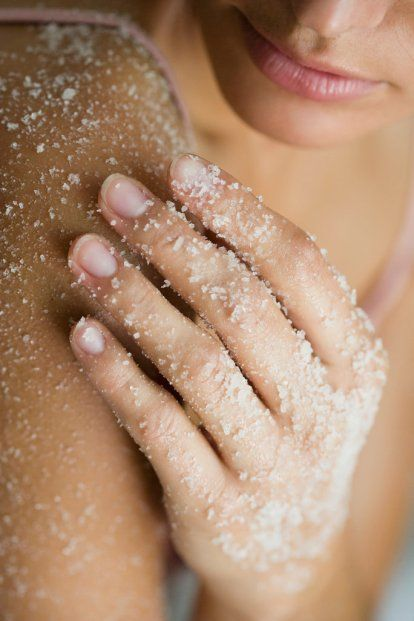

Bath & Body
Skin is an important factor for self-confidence. When we look good, we feel good. And our skin
is a big part of our appearance. That’s why skin care is so important: it makes you look good,
it keeps your skin healthy, and you will feel good.How your skin will look in ten or twenty
years, depends on the way you care for it now
So make sure to take good care, but also to not use skin care products that might do more bad
than good. Use products that are made for your skin type, and never use anything too aggressive.
I'm here to help you give some advice on some products that works for me.

Dry Skin Problems
LUSH
OCEAN SALT BODY SCRUB
Refreshing, exfoliating, hydrating...what doesn't this scrub do? Our cult classic scrub has a
mineral-rich mix of fine and coarse sea salt for serious exfoliation, balanced with coconut oil
and avocado butter to soften the skin. That punchy citrus scent? It comes from lime oil as well
as limes extracted in vodka to brighten and tone. Just one scrub with this beauty and you'll see
why it's so popular!
I was hesitant to buy this because of the mixed reviews. I had the chance to get a sample of it
and WOW! It leaves your skin very soft and I can see why people complain about the oily-ness but
if your face needs the moister go for it! have very dry skin under my nose and 4 uses of this
scrub and it has gotten so much better! I have looked for a product to get rid of the dryness
and I finally found it. The smell is great too!
Body Balm
AESOP
GERANIUM LEAF DUET
Enjoy Geranium Leaf Body Cleanser and Geranium Leaf Body Balm in concert daily to maintain
impeccably cleansed and supple skin.
The AESOP Geranium Leaf Duet comes from the brand’s popular line of parsley seed based products
and works best for those with normal to sensitive skin. This AESOP body balm is a lotion that
provides gentle exfoliation while deep cleaning the skin. Along with parsley seed, this AESOP
lotion is infused with lactic acid which is an alpha hydroxy acid known for helping to exfoliate
the skin, licorice root which helps to brighten the complexion, and black currant seed oil which
helps stimulate skin cell regeneration. After using this product, my skin feels cleaner and
smoother!
The smallest amount goes a long way so all you need is a teaspoon. Use twice daily and blend the
mixture with a few drops of water to form a milky emulsion, which should then be massaged over
your damp dace and rinsed off thoroughly.